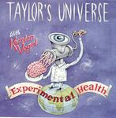

| Artist: | Taylors Universe With Karsten Vogel |
| Title: | Experimental Health |
| Label: | Marvel Of Beauty MOBCD 002 |
| Length(s): | 51 minutes |
| Year(s) of release: | 1998 |
| Month of review: | [04/2004] |
| 1) | Man On The Mountain | 7.39 |
| 2) | Elephant Kiss | 4.33 |
| 3) | Inner Space | 6.06 |
| 4) | Base Camp | 2.14 |
| 5) | Notkai | 3.25 |
| 6) | Milo's Dakdar | 2.42 |
| 7) | Kindergarten | 4.33 |
| 8) | Therapy | 5.57 |
| 9) | Charly & Juliet | 4.24 |
| 10) | Experimental Health | 9.58 |
Elephant Kiss continues in the same fusionish vein, with some world music influences on the side. The flute is a dominant factor, fluttery and sometimes subdued. The music is generally very tuneful with nice appealling melodies, this time interrupted by a reggae break. Quite unexpected, and lazy too. I do not really see the Elephant Kiss, although the reggae could be thought of something like a big slurp. The variation is strong on this one, a bit frantic even, with a bit of Crimsonesque dissonance and awkwardness thrown in for good measure. Maybe kissing is what comes right after talking.
Inner Space has speedy hi-hats, with the sax playing a long slow melody. The mood is more introspective now, but the guitar is clear enough. Later the playing gets more rowdy and energetic. The music plods on with the guitar doing its screeching best, while the bass tries to keep things in order. The music may also be compared to Gordian Knot and some of the Magna Carta prog rock trio's, and although it may at times lack a bit in flashiness, they certainly make up in melody.
The next few tracks are quite a bit shorter on average. Base Camp is the first of these with ethereal guitar playing. More experiment than music. Notkai is a bumpy tune, quite simple and repetitive in outset, in the backdrop. Over that we hear the saxophone freewheeling. The mood is as if the band is falling over with sleep. Some backwards played sounds make the whole sound a bit more collage/experimental like.
Milo's Dakdar has some rhythm guitar and nice sloping sax lines across the more angular ones on guitar. Kindergarten has some nice tense melodic lines, like its predecessor. Very good, especially when the vocals set in. Now I am more reminded of a band like Bi Kyo Ran or something other rash and Japanese. I am not sure my child to be would like to be running round in a kindergarten such as this, but one can always hope.
Therapy opens with gurling organ, the continuation is plodding Crimsonesque rock. Later the song changes face for a moment, with acoustic guitar setting in and a great build up towards the end. Very driving. Charly & Juliet is the most straightforward rock song, very much 'rough and ready'. Not my kinda tune.
Experimental Health almost reaches the ten minute mark. It opens with spoken words and only after the four minute mark does some music come in. This is more a collage like affair with fast jazzy rhythms, and occasional production. Random stuff. But beware cranking up the volume, your ears will suffer in the end.